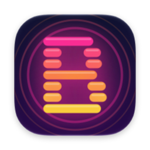
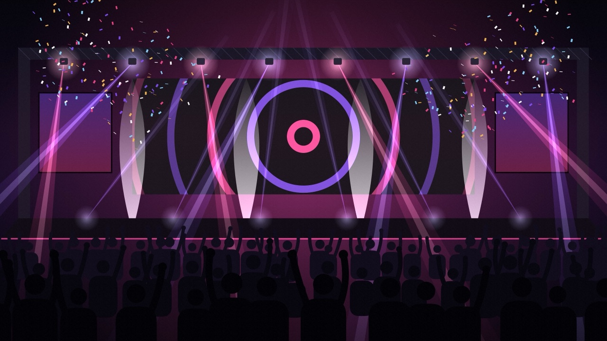
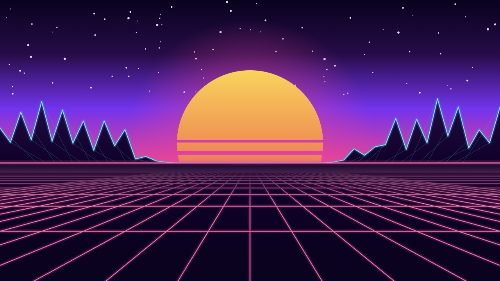
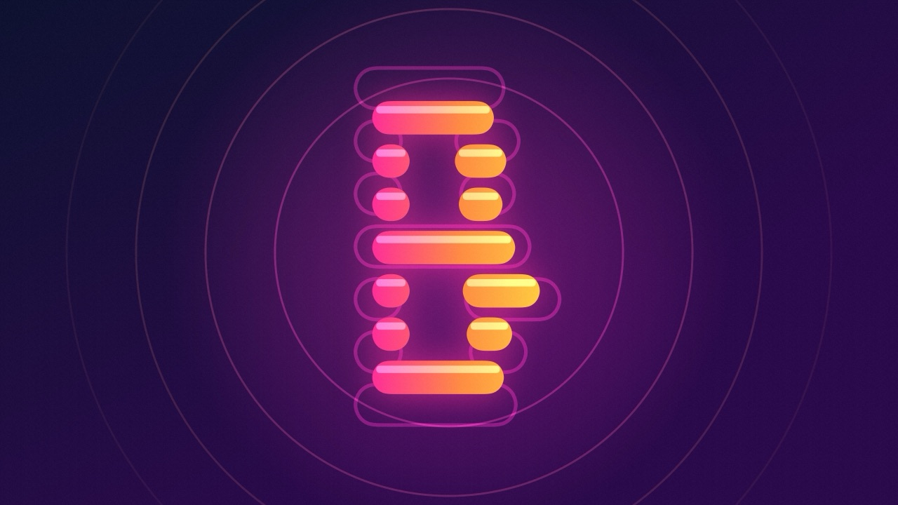
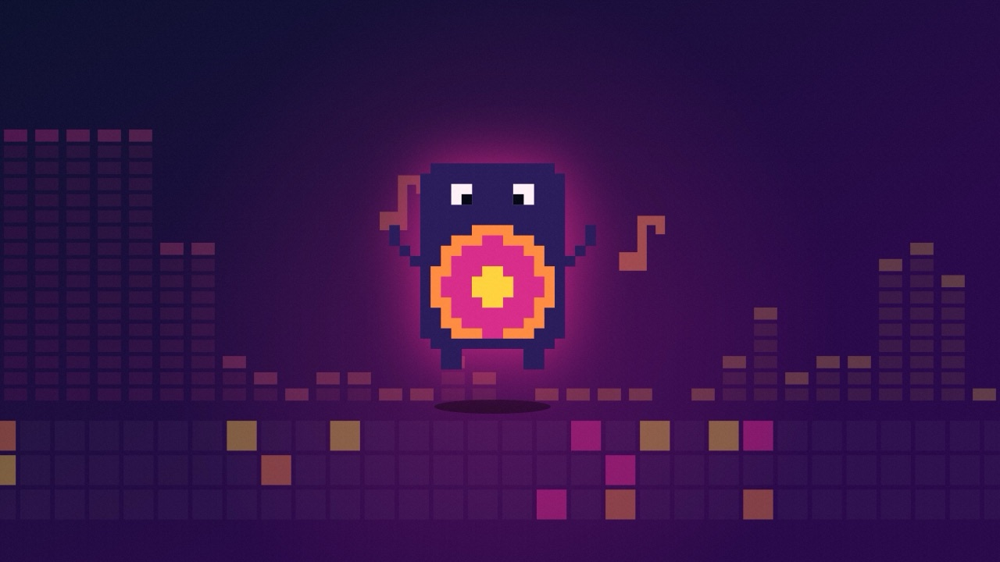

Concert Mode
A concert stage for the song playing in Apple Music or Spotify, lit in its album art’s colors with its name on the screens. It picks the stage, or you shuffle or choose.

BeatsWallPrivate beta · macOS 15 or later
Live wallpapers for your Mac that dance to whatever’s playing. Spotify, Apple Music, YouTube — anything.
Synthwave




Scroll to change the wallpaper
A full concert stage on your desktop, lit by the song you’re playing.
BeatsWall hears your Mac’s sound output, so the wallpaper reacts to the beat, the bass and the melody. Audio is analyzed on your Mac as it plays. It’s never recorded, saved or sent anywhere.
17 collections · 57 live wallpapers
A concert stage for the song playing in Apple Music or Spotify, lit in its album art’s colors with its name on the screens. It picks the stage, or you shuffle or choose.
Colors, laser patterns, strobe, fog, intensity and movement for the Concert and Light Show stages.
Search Apple Music or add songs from your library. BeatsWall mixes an intro, each song’s best part tempo-matched and crossfaded on the beat, and an outro, then plays it as a live show.
Karaoke-style lyrics on your wallpaper for songs playing in Apple Music or Spotify.
A new wallpaper on every bar.
Turn any wallpaper and song into a vertical, square or landscape video for TikTok, Reels or Shorts, credited to your own handle.
The wallpaper full screen on a TV or second monitor, for filming your setup.
Put your own picture on the screens of every concert stage.
Pauses when windows cover the desktop or in Low Power Mode. A lighter-effects mode for streaming. A separate wallpaper for each display.
BeatsWall-….dmg from Releases.Beta builds expire after about 60 days. The app tells you when a newer build is out.
BeatsWall doesn’t record or redistribute music. Remixes and clips are made from songs you supply, or from Apple Music’s 30-second previews, for your own listening. If you post a clip, make sure you have the rights to the music in it.